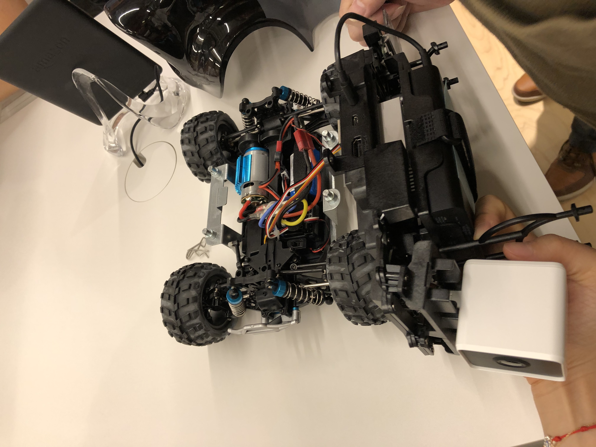

POSTS
2019-05-31: AWS DeepRacer League Workshop
AWS DeepRace League - Technical Workdshop
Yesterday, I joined the “AWS Deep Racer League - Technical Workhop”, because I wanted to have fun learning about machine learning. The AWS DeepRacer is a 1⁄18 scale racing car and it makes it possible to learn Reinforcement Learning (RL) in a fun way. 
It was disappointing that the hands-on was disabled due to a failure of the AWS service.
The presenter explained DeepRacer’s Reinforcement Learning and its simulator. however, it was very difficult for me. It is difficult to understand without learning about machine learning and reinforcement learning.
Anyway, the DeepRacer looks very interesting, so I wanted to study machine learning and reinforcement learning.